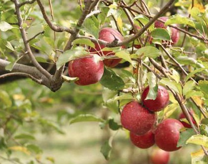

Preston Idaho
Weather Summary
| Currently: | Sunny |
| High: | 90° F |
| Real Feel: | 95°F |
| Humidity: | 69% |
| Wind Speed: | 10 mph |
5 Day Forecast
 75° F
65° F
80° F
85° F
90° F
75° F
65° F
80° F
85° F
90° F
Extension notes: Winter Preparation - Spring Prosperity
By BRACKEN HENDERSON Franklin County Extension Educator Feb 5, 2020
As soon as our snow begins to turn slushy and the first patches of matted grass appear, I get antsy. My mind knows Mother Nature is just teasing, yet my heart can’t resist a peek in south-facing flower beds for the beginnings of daffodils. Winter is a difficult time for the gardener in us. While there is little outside that can be done, a little preparation and forethought now will pay dividends when spring is really on its way.
Consider your gardening goals. You may have never consciously thought you had them. Ask yourself why you garden. What do you hope to get out of it? Based on your objectives, develop a plan that utilizes the space available. If you’re most interested in economical production of fresh produce, don’t use things requiring lots of growing space or that your family doesn’t really like to eat. If you like most to simply grow lots of different things, plan that diversity into your garden plot. Don’t outline rows upon rows of corn or tomatoes and run out of room for your decorative gourds. While the consequences aren’t as extreme, you wouldn’t decide how many rooms you want in your house while at the store buying lumber. However, that is exactly the way we typically do garden planning. Regardless of your objectives, you will better fulfill them if you plan to work towards what gives you satisfaction.

| Caribbean Clima |
| 28 N 8st E |
| Preston, ID 83263 |


|